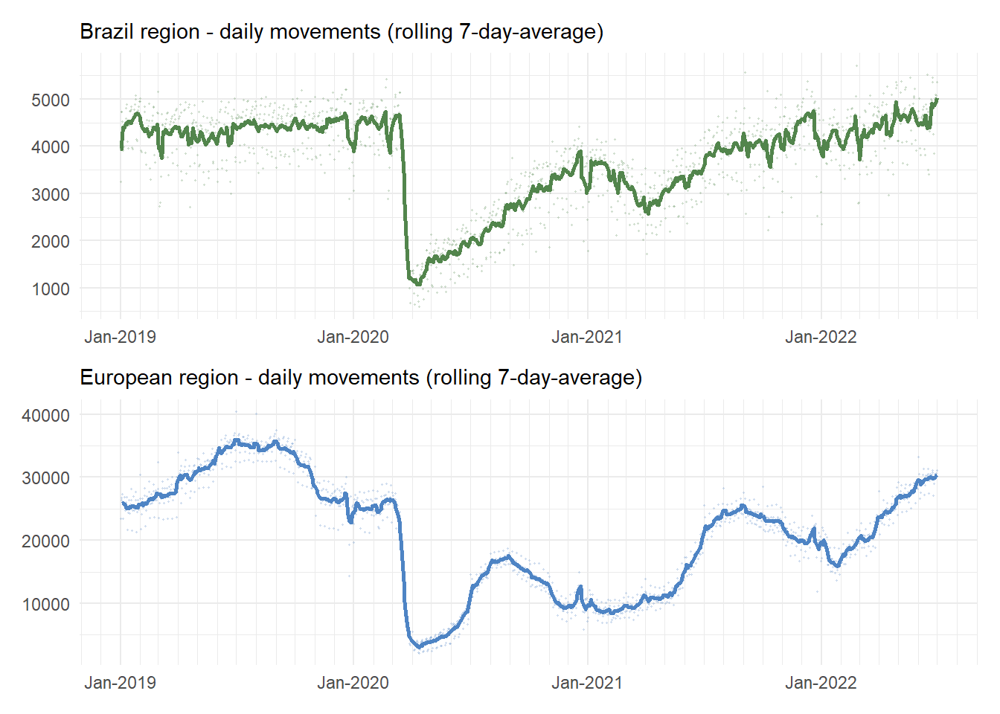
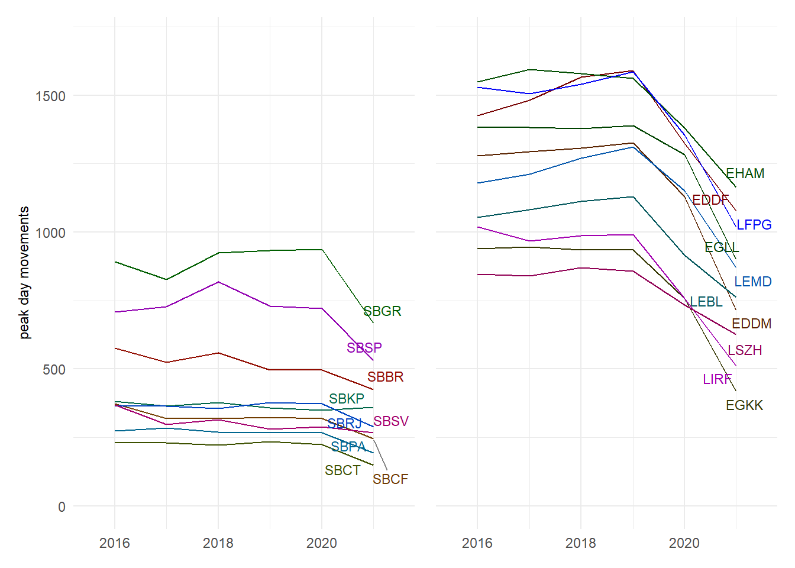
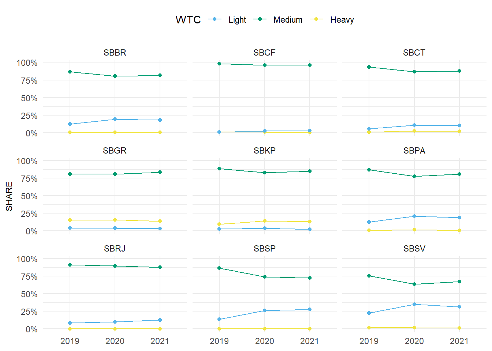
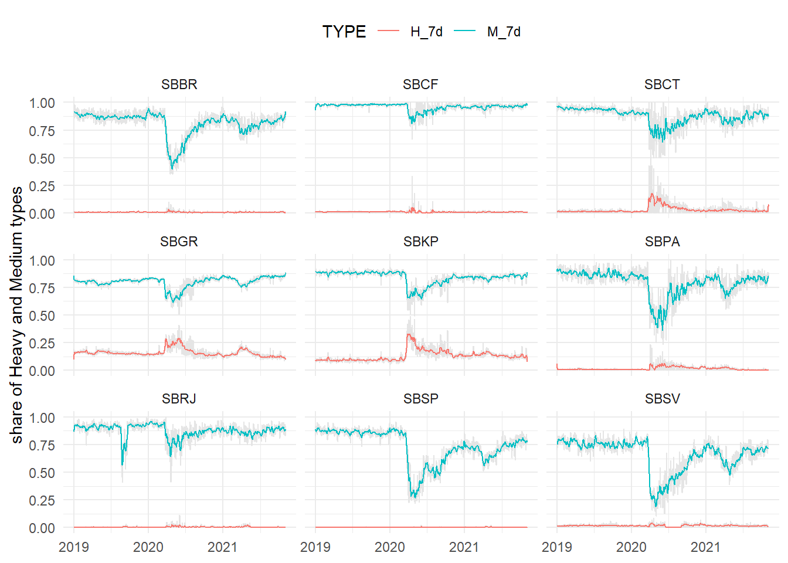

3 Traffic Characterisation
The overarching objective of air traffic services is the provision of safe, orderly, and efficient flow of air traffic. Accordingly, operational system performance is linked to the actual and serviced demand (i.e. air traffic). It must be noted that the serviced traffic may be different from the actual demand. Constraints, both on the airspace user and air navigation system side may lead to unsatisfied demand. However, the level of these changes is outside the scope of this comparison.
For operational comparisons, it is therefore important to have a good understanding of the level and composition of the air traffic. The previous section provided the high-level context and organisation of air navigation services in Brazil and Europe. This chapter establishes some key air traffic characteristics for both regions to frame the observed operational performance in latter parts of the report.
3.1 Annual Traffic
Figure 3.1 shows the regional traffic development in Brazil and Europe. Pre-COVID air traffic in Brazil showed only mild variation across the year 1. This is in contrast to the strong seasonal nature of air traffic in Europe and its peaking behaviour during the summer months of 2019. In both regions, the unprecedented decline in air traffic occurred in March 2019 in the aftermath of the pandemic-declaration by the World Health Organisation (WHO).

To understand the magnitude of the impact of COVID on air traffic, Figure 3.2 depicts the regional traffic in a normalised form. The reference level for the normalisation is set at the 90th percentile of the traffic observed in 2019. The initial drop in traffic due to COVID-related travel constraints started a few days earlier in Europe. This was related to the reaction of several air transport operators to limit their flights to Asia. Furthermore, some European states already responded to the initial surge of infections in anticipation of the declaration by the WHO.
Both regions responded initially similar to the world wide restrictions for air travel in combination with immediate regional health measures following the declaration by the WHO. The traffic declined in both regions in the order of magnitude of about 80-90%. While traffic in March through May 2020 showed a similar pattern, Europe experienced a higher share of air traffic in June, July and August of 2020. Traffic levels in Brazil grew gradually and consistently in 2020 and broke even with Europe in the early autumn. At that point in time Europe was facing a second wave of infections following an initial relaxation of health constraints to facilitate the summer vacation season. In consequence, governments had to impose again restrictions on the regional traffic to curb the further spread. While air traffic in Europe declined, traffic in Brazil continued its initial recovery until the end of 2020. In both regions the spikes (twin peaks) of the seasonal Christmas and New Year’s traffic are visible. A significant change in the pattern developed with the beginning of 2021. Following the seasonal pattern, Europe observed a continual increase in air traffic as of end January/beginning February 2021 and a strong recovery to about the 65-70% pre-COVID level ensued. The pattern of air traffic was different in Brazil. After having reached a level of about 65% at the end of 2020, Brazil also faced a second wave of COVID infections in early 2021. This resulted in a distinct reduction over the first 6 weeks in 2021 followed by a similar recovery rate throughout March and April 2021. Both regions reached 65-70% of their pre-COVID traffic levels in April and May 2021. While traffic continuously increased in Brazil, Europe saw another wave post-summer 2021. Traffic levels reached the pre-COVID 90% (and higher level) in Brazil in early 2022. With the continual relaxation of travel constraints for inner-European traffic in early 2022, Europe also reached the 85% pre-COVID level with July 2022.
In general, the gradual recovery over 2020 and 2021 also suffered severe setbacks by the subsequent reappearances of the virus characterised by the subsequent waves (i.e. ripples) in Figure 3.2. Comparing both regions, the recovery patterns of the two regions show a coherent central tendency, with relevant differences according to the season or increased regional health measures (i.e. travel restrictions). It is pertinent to note that European air traffic was more sensitive to the effects of winter and summer, reflecting the holiday seasons and climatic variations. It is interesting to note, that the Brazilian system shows little sensitivity to calendrical and seasonal effects.
By the time of the publication of this report (October 2022), the world economy and global air transportation is still recovering. There is growing confidence that COVID transitioned from its pandemic stage to an endemic stage. By the end of 2021, traffic volume was 26% and 25.5% higher for Brazil and Europe compared to 2020. The Brazilian Gross Domestic Product grew by 4.6% in 2021 and the World Bank’s estimate for 2022 is a growth of 1.4%. The European market has shown a 5.4% GDP 2 increase for EU in 2021. The traffic volume of 2019 is expected to be reached towards end 2023 or beginning of 2024 for both regions, if the economic activity keeps on track.
3.2 Study Airport Level Traffic
The previous section showed the traffic development on the network level and Airports, in turn, represent nodes in this overall network. Thus, changes in the overall traffic situation will ripple down to the airport level. However, connectivity and type of traffic may differ from airport to airport. It is therefore useful to understand how traffic developed locally on the level of the selected study airports.
Figure 3.3 shows the variation of air traffic across the study airports. On average, the annual traffic at the Brazilian airports in 2020 decreased by about 47% and in 2021 traffic ranged about 32% lower than in 2019. The European study airports observed a higher decrease. The airports serviced -60% in 2020 and -55% in 2021. The airports of this study had been selected based on their role in the regional networks. While the numbers vary slightly, a similar pattern is observed in Brazil and Europe. This suggests that the traffic related pressure on air traffic services behaved in a similar fashion. This observation will be relevant for the following chapters. Considering all 10 airports per region may however mask varying behaviour at different airports. It is important to note that the pandemic affected both sets of 10 airports more severely than their national levels, recalling that Brazil closed 2021 with -20% and EUR with -43% compared to 2019 overall aircraft movement.
Figure 3.4 shows the annual traffic observed at the study airports in 2021 and the associated annual variation of traffic comparing 2020 and 2021. On average, traffic levels at all airports in both regions increased following the initial drop in 2019. But there are notable exemptions.
São Paulo/Guarulhos (SBGR) in Brazil and London Heathrow (EGLL) in Europe show a similar lagging recovery. This reflects the high share of international air traffic serviced at both airports. Both airports observed an about -5% lower traffic on an annual basis in 2021 than in 2020. Almost -10% lower traffic was observed in 2021 in comparison to 2020 at Curitiba (SBCT).This drop may be related to the strong connection between Curitiba and the Argentine capital, Buenos Aires, which faced more severe travel restrictions due to COVID. London Gatwick (EGKK) serviced about -30% less traffic in 2021 than in 2020, probably reflecting the UK’s more severe anti-COVID restrictions at that time. Traffic levels in 2021 at SBGR and São Paulo/Congonhas (SBSP) range in the order of magnitude of the less busy airports in the top-10 of Europe.
3.3 Peak Day Traffic
While the annual traffic provides insights in the total air traffic volume and associated demand, it does not provide insights on the upper bound of achievable daily movement numbers. The latter depends on demand, operational procedures and constraints, and the use of the runway system infrastructure. The peak day traffic is determined as the 99th percentile of the total number of daily movements (arrivals and departures). The measure represents thus an upper bound for comparison purposes.
Figure 3.5 shows the peak day traffic in 2019 with reference to the number of runways.

Figure 3.5 shows the peak day traffic in 2021. Peak traffic at the 2-runway airports Guarulhos (SBGR) and São Paulo Congonhas (SBSP) in Brazil and London Heathrow (EGLL) and Munich (EDDM) in Europe achieve similar or higher peak numbers than airport with more runways. It’s valid to note that Campinas (SBKP) and Salvador (SBSV) were stable due to an already low traffic concentration regarding per day granularity.
For European with more than 2 runways it needs to be noted that the runway system does not support independent operations of all available runways. Thus, the serviced peak traffic is also impacted by the runway system configuration. Peak operations as SBGR range in the same order of magnitude than Munich (EDDM) and exceed the peak movement observed in Zurich (LSZH, 3 runway system) or Rome Fiumincino (LIRF, 4 runway system).
Figure 3.1 and Figure 3.2 depict the decline in air traffic with the start of the COVID pendemic in March 2020 at the same moment in both regions. However in terms of peak movements the seasonal difference between Brazil and Europe become more visible in Figure Figure 3.6. While in Europe a sharp drop in peak day traffic is already observed for the year 2020, the respective peak day movements in the first 3 month in 2020 in Brazil range in the same number than the years before. The recovery seen in 2021 movements did not reflect at Peak Days. The distribution was more equalized, resulting in lower peaks.
3.4 Fleet Mix
The fleet mix - and in particular the separation requirements between the different aircraft types - is an important influencing factor for the capacity and observed (and realisable) throughput. In particular, aircraft with longer runway occupancy times or larger proportions of heavy aircraft may result in lower throughout due to the larger wake turbulence separations. The locally defined capacity values may therefore differ based on the predominant fleet mix and operational characteristics, and ultimately result in different observed Peak Day movement numbers.
Figure 3.7 depicts the observed share of different wake turbulence categories (WTC) across the study airports in 2021. In both regions, “medium” aircraft types are the predominant aircraft type.
On average, airports in Europe observed a higher share of “heavy” aircraft in 2021. In Brazil, Guarulhos (SBGR) and Campinas (SBKP) serviced a noticeable share of “heavy” aircraft of around 12% which is comparable to the share at Zurich (LSZH). In Brazil, “light” types play a larger role at the study airports than on the European side. The fleet mix at SBGR and SBKP showed a similar pattern (high share of medium, discernible share of heavy, and shallow share of light types) as observable at European airports. The heavy category represents wide-body passenger aircraft and full cargo flights. Within the European region - and its multitude of national hubs - a significant number of international long-haul flights is operated at the chosen study airports. In Brazil, the highlighted airports, Guarulhos (SBGR) and Campinas (SBKP), play a major role in terms of international connectivity. It follows that medium and light types are used for inter-reginal connections. Based on the selected study airports, the underlying decentralised structure of the European network becomes more visible. While international air traffic is centralised in Brazil with 2 pre-dominant hubs, capital or main national hubs are more frequent in Europe. London Heathrow (EGLL) is a noteworthy exemption. The level of international connectivity can be derived from a 50% share of heavy types.

Figure 3.8 and Figure 3.9 depict the evolution of the annual fleet mix for the years 2019 through 2021 for nine of the study airports in both regions 3. Two principal patterns emerge: (i) airports with COVID-related contraction of traffic, i.e. the reduction in overall traffic in 2020 and 2019 did not influence the relative share of aircraft types serviced at the airport, and (ii) airport with a reduction of the share of “heavy” aircraft and increase of the relative share of “medium” or “light” types.
With the exception of Zurich (LSZH) in Europe, “light” types did not feature widely. There appears to be a reciprocal relationship between the relative share of “heavy” and “medium” types utilised in Europe. At major hubs (e.g. EDDF, EGLL, EHAM, LFPG) the ratio of “heavy” aircraft increased across the years.
The fleet mix in Brazil showed a different pattern. While the share of “heavy” types remained on average constant across the period 2019 through 2021, lower shares of “medium” types resulted in higher utilisation rate of “light” types.
For future reports it will be interesting to investigate also the connectivity in terms of operated aerodrome pairs and aircraft types.
Figure 3.10 and Figure 3.11 focus on the temporal evolution of the fleet mix on a rolling weekly basis (7-days) for heavy and medium type aircraft. This shows a more varied behaviour across all airports.

The synchronicity of the relative reduction and increase can be observed at all European airports. The overall traffic pattern at these airports followed the overall traffic development in Europe for the observed period. The increased share of heavy aircrafts may reflect the resilience of cargo flights over the pandemic. Zurich (LSZH) - based on a structurally overall lower share of heavy aircraft and on the presence of a good share of light types - showed a pattern that reflected the overall trends. With a lower share of heavy aircraft for most Brazilian airports, the evolution of the medium type share follows the overall traffic development in Brazil. The decline in March 2020 is characteristic. For example, in Sao Paulo (SBSP) - with a negligible share of heavy aircraft - the share of medium aircraft mirrors the overall trend in Brazil. This shows that SBSP predominantly serviced domestic or short-range traffic. That is somehow expected for São Paulo (SBSP) and Rio de Janeiro (SBRJ) since their runaway length and airport infrastructure are not suitable for heavies, but it is interesting to note that other Brazilian airports such as Brasília, Confins and Curitiba, which can accommodate heavies, do not serve a significant number of these aircraft. That is a good opportunity for future studies and explorations.
3.5 Summary
This chapter described the overall evolution of air traffic in Brazil and Europe and offered a closer look at the selected subset of study airports. Both regions observed a unprecedented decline in air traffic in March 2020 in response to COVID. However, the response pattern differed. Both regions observed COVID waves resulting in measures to limit air travel and curb the spread of COVID. Despite these waves, the Brazilian system recovered more consistently in structural terms. This shows the effect of the additional coordination and harmonisation effort of policies in Europe. As national governments varied in their assessment and introduction of health measures, including travel restrictions.
An intersting observation is that despite the overall variation of traffic on regional and local level, the share of operated aircraft types varied to a lesser extent on an annual level. However, distinct patterns become visible on the airport level. A central factor is the difference in terms of network connectivity and the role of the selected study airports. Based on the historic context, there exists a higher number of national hubs across Europe. In Brazil, international and cargo air traffic are more centralised and primarily operated to/from SBGR and SBKP. This can be obsered based on the differences of shares of heavy types (predominantly wide-body aircraft = long-haul international and cargo traffic).
These differences may impact - amongst others - separation and throughput. This chapter also highlighted potential areas for further research to better qualify the level of network and pan-regional connectivity.
For Brazil, the depicted volume of air traffic is the sum of all movements at the study airports. This captures a significant share of the total traffic and shows the overall development.↩︎
Source: https://ec.europa.eu/eurostat↩︎
To increase readability of the visualisation an airport with low variability has been removed from the figure for both regions.↩︎